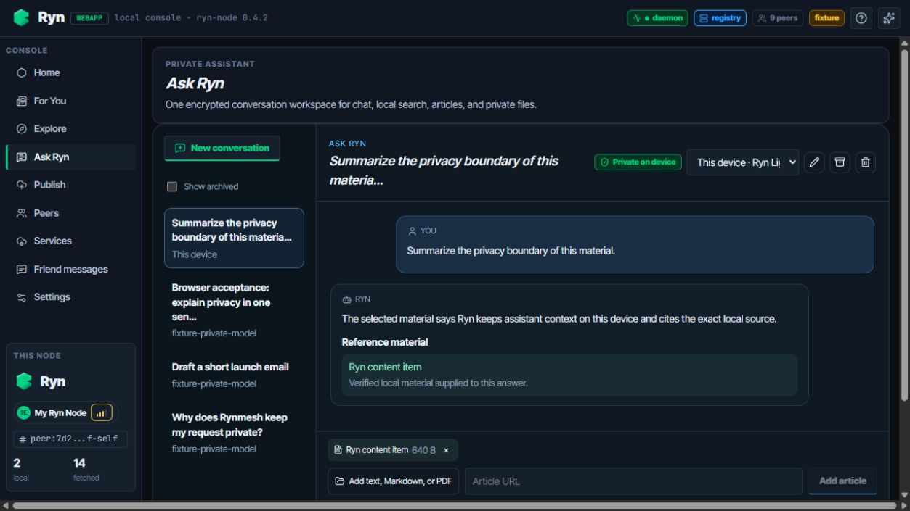
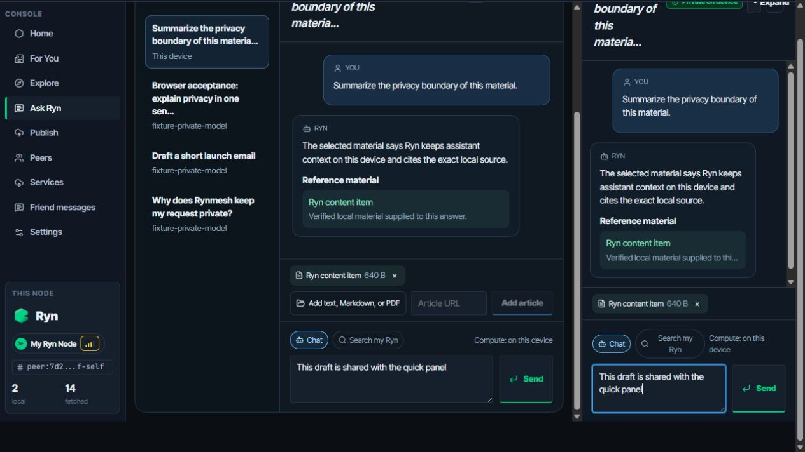
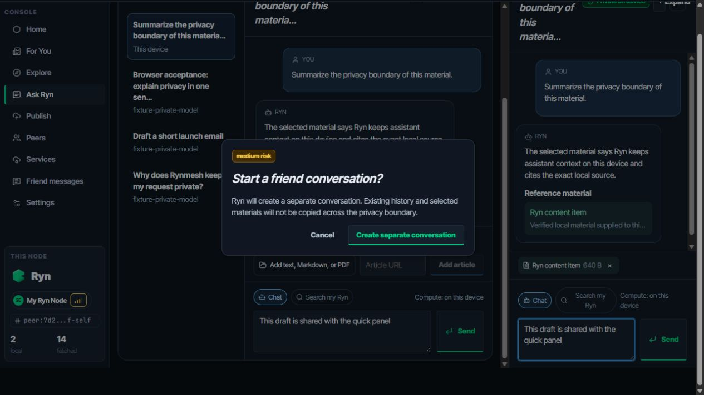

DEV-03 · Unified Ask Ryn workspace

The main navigation exposes Ask Ryn; legacy Search & Ask and Private AI URLs redirect here.
“Private on device” and the exact compute target are visible beside the conversation title and composer.
The context chip, bounded size and normalized reference card show which local material was actually sent.

The full page and quick side panel show the same messages, context and unsent draft at the same time.
Both composers repeat “Compute: on this device”; the browser only calls the local node facade.

Selecting a Friend Mesh provider requires an explicit medium-risk confirmation and creates a separate conversation.
The confirmation states that existing history and selected material will not be copied to the friend boundary.